Contributions
LT-Mem Framework
A volatility-aware memory evolution framework. Update decisions are governed by a volatility-conditioned reasoning layer, optionally assisted by a constrained LLM, producing a Tri-Memory structure (Live, Delta, Meta) that preserves both current and historical object states.
LT-VQA Dataset
A dataset and evaluation suite requiring persistent object identity and structured temporal reasoning across multi-session revisits.
Token-Efficient Temporal Reasoning
Volatility-aware evolution improves long-horizon object-centric reasoning over overwrite and accumulation baselines, while reducing token consumption by up to an order of magnitude compared to vision-based approaches.
LT-mem Framework
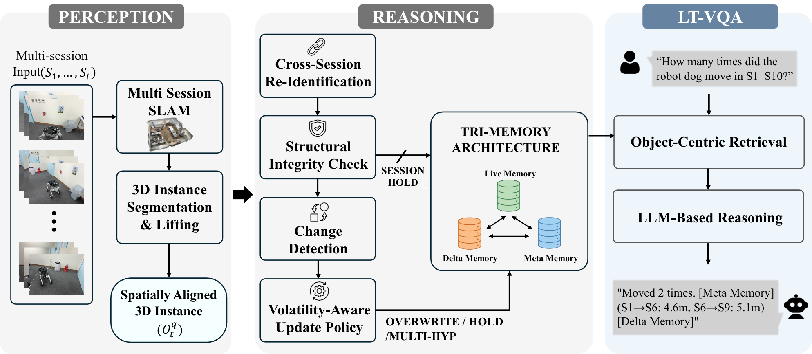
A volatility-aware memory evolution framework. Update decisions are governed by a volatility-conditioned reasoning layer, optionally assisted by a constrained LLM, producing a Tri-Memory structure (Live, Delta, Meta) that preserves both current and historical object states.
LT-VQA Dataset
LT-VQA is a controlled multi-session dataset for evaluating long-term object-centric scene understanding. Unlike single-session VQA benchmarks, LT-VQA targets persistent cross-session object identity, event-level state transition annotation, and session-indexed temporal reasoning — enabling questions such as "Where has the green chair been across all sessions?"
Environments


Tracked Objects
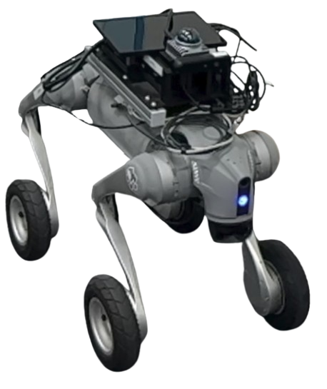
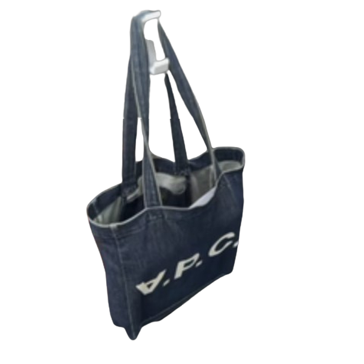
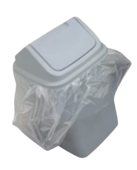
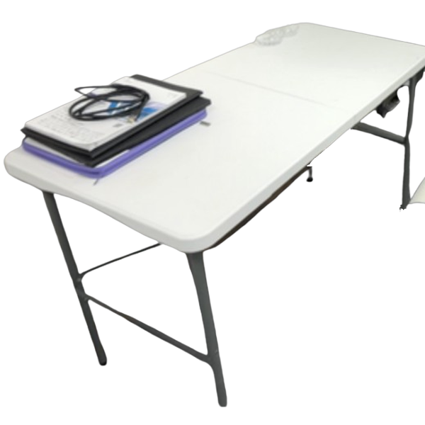
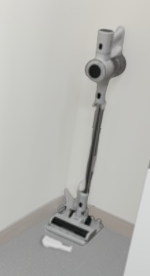
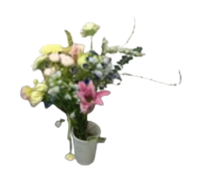
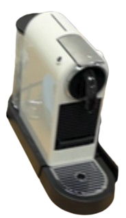
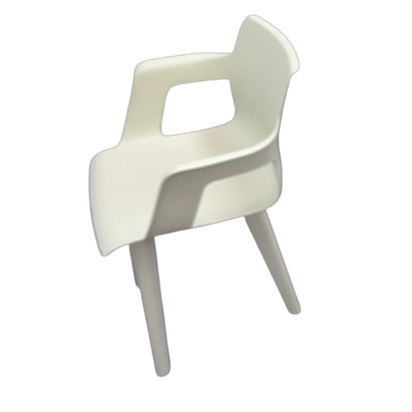
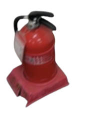
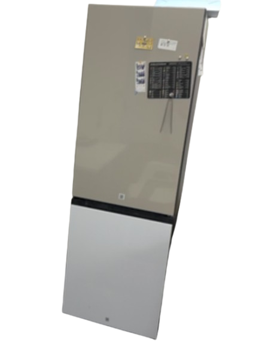
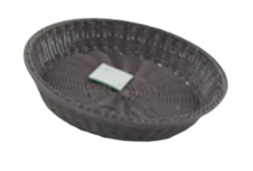
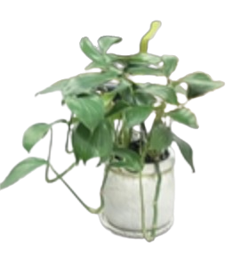
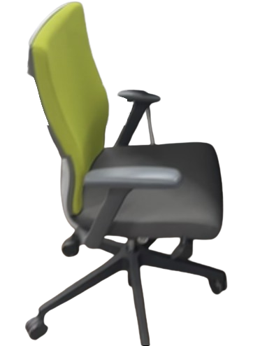
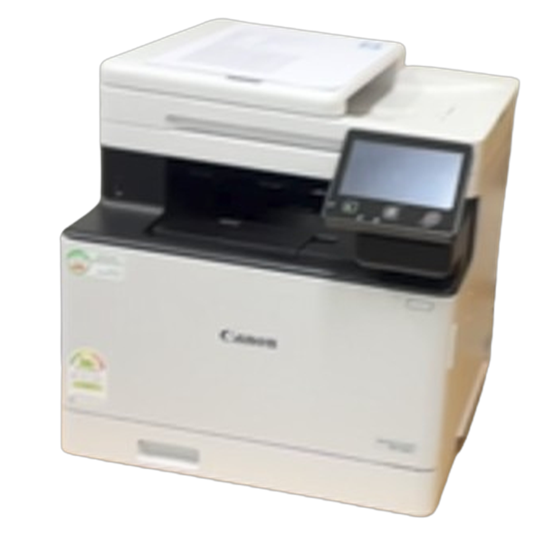
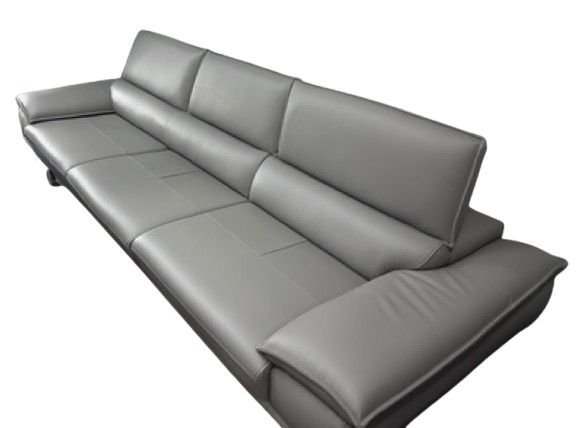
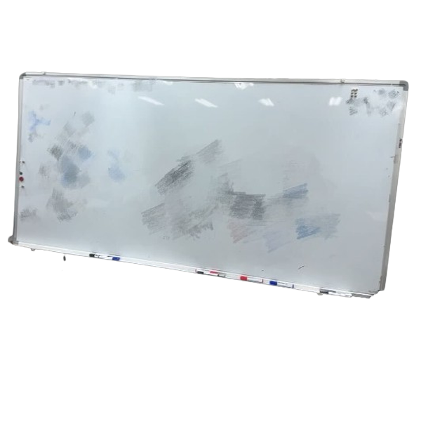
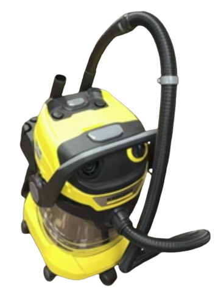
Download
{
"session": "S6",
"object": "robot_dog",
"event": "MOVE",
"from": [-0.81, 0.44, 1.77],
"to": [-0.96, 2.52, -2.27],
"displacement_m": 4.6
}
BibTeX
If you find LT-Mem or LT-VQA useful, please cite our paper:
@inproceedings{lee2026ltmem,
title = {Volatility-Aware Spatio-Temporal Memory for Lifelong Scene Understanding},
author = {Lee, Yumin and Ju, Hyoseok and Kim, Giseop},
booktitle = {Proceedings of the IEEE/RSJ International Conference on Intelligent Robots and Systems (IROS)},
year = {2026},
}